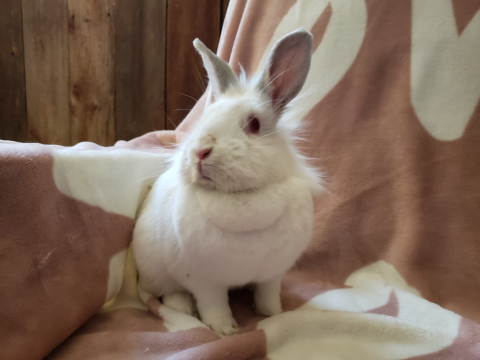

Breed: Lionhead Mix
Sex: Female
Age: 3 Years, 8 Months
Weight: 3.8 Pounds

I'm Calamity Jane and I have a little attitude! I was pulled from a shelter and the vet discovered I had a couple
of teeth that need some attention, they were sticking out through the bottom of my jaw! The nice rescue people got
me set up with a bunny dentist so I can eat better. But then I just had more problems! My bad teeth were removed,
and then I had a large abdominal mass removed, and THEN I had a kidney removed that was causing me a lot of
problems! Wow!
I am a sassy girl but feeling much better now. I will need more dental surgeries, so I
have a special foster home where they both appreciate my snark and can also provide me ongoing veterinary
checkups. Hopefully my worst medical woes are behind me, but I will need continued monitoring of my teeth and my
bloodwork to make sure my remaining kidney keeps up! It's working well now.
To support me, or any of the sanctuary rabbits at the IHRS, please Donate to our GoFundMe if you are able.